列車乗換駅で見ることが出来る今昔・後編 < 池谷駅 / 徳島県鳴門市 >
列車乗換駅で見ることが出来る今昔・前編 < 池谷駅 / 徳島県鳴門市 > 続き
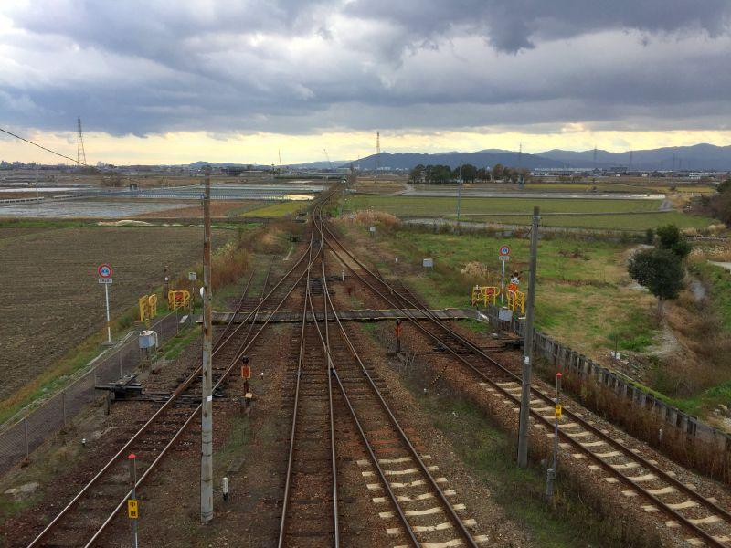
高徳線(高松 － 徳島)
鳴門線(池谷 － 鳴門)
の両線が分かれる分岐駅・池谷(いけのたに)駅。
線路の配線から、この地に鉄道が来た経緯を知ることができます。
運行されている列車本数
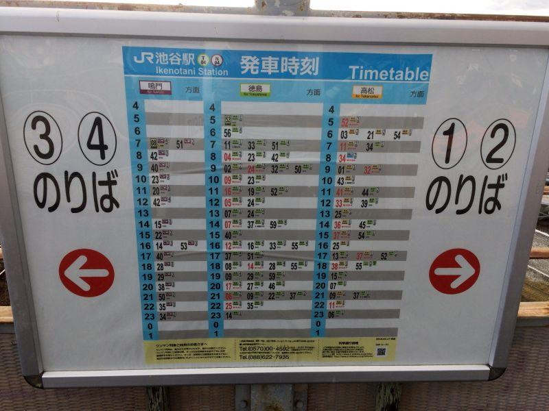
徳島
鳴門
板野・高松
の三方向に分岐する。
こちらの発車時刻表で 真ん中の徳島方面(高徳線下り)が最も運行本数が多い理由は、
★ 徳島市の近郊区間で、板野 － 徳島 の近距離区間を運行する列車が設定されている
★ 鳴門線の、鳴門 － 徳島 で運転されている列車が含まれる
ため。
徳島方面のダイヤに関しては、 鳴門線(下り)＋高徳線(下り) で運転されている列車が、合算されていることになります。
入線してくる列車たち
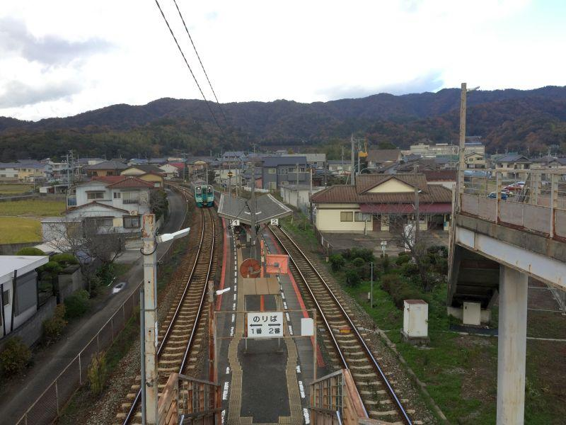
1番線に列車がやってきました。
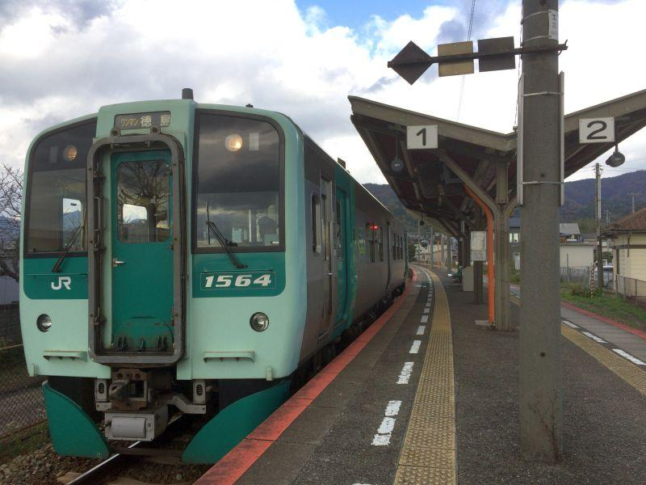
1500系気動車
国鉄型気動車の老朽化による 車両置き換えを目的に、平成18年(2006)から導入された車両。主に徳島地区で運用されています。
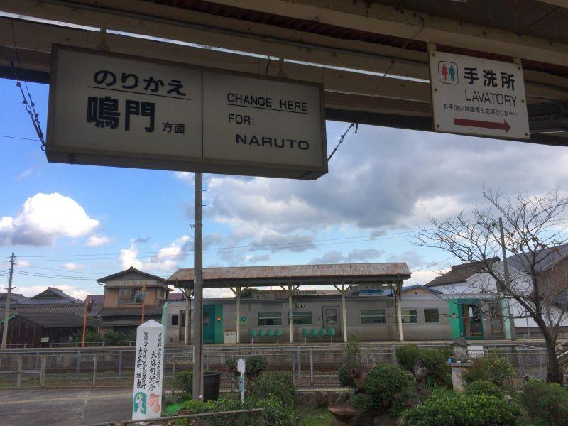
と、
鳴門線にも列車が入って来ました。
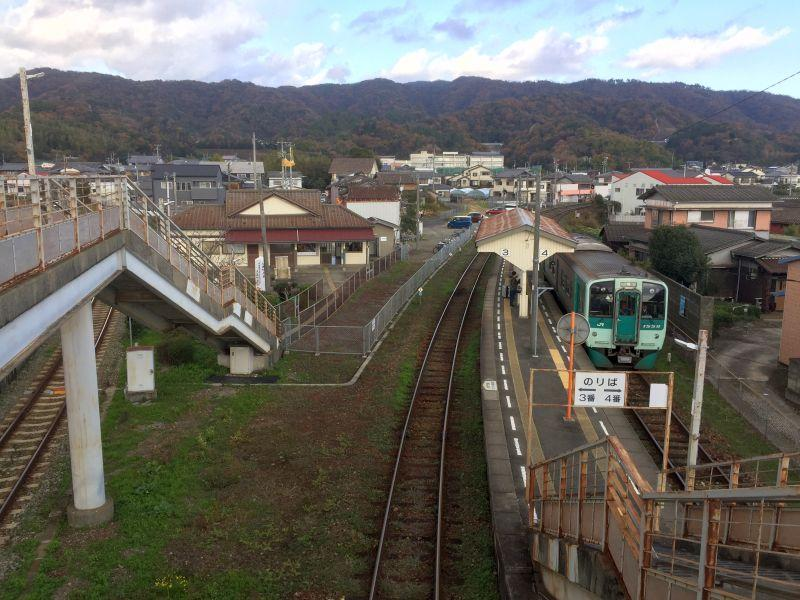
T字の跨線橋を 右に左に、移動が忙しい。
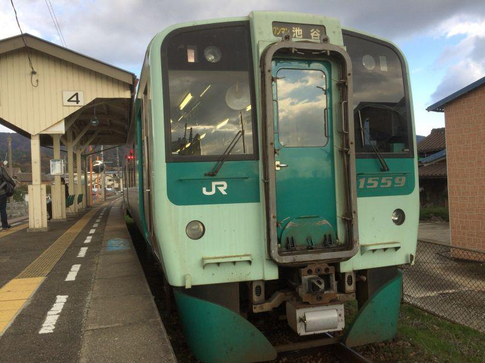
こちらも1500系気動車。
鳴門線で運行されている列車の多くが、路線を越えて 徳島 － 鳴門 間で運転されています。
途中の "池谷" までの列車、その行先が表示される列車は一日二本しかないので希少。
鳴門線起点の0キロポスト
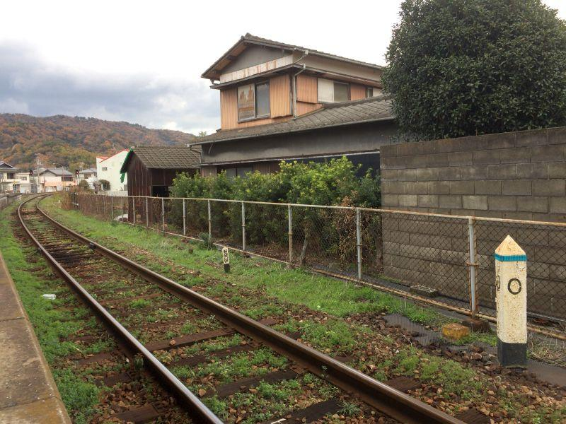
キロポスト発見！
主には鉄道関係者が 路線の詳細位置を知るのに必要な鉄道備品。
< 参考記事 >2018,1/19 静かな無人駅で、みどころを見つける旅 < 大杉駅 / 高知県大豊町 >
鳴門線
起点... 池谷駅... 0.0km
終点... 鳴門駅... 8.5km
路線長が短く 行き止まりである路線は、 "盲腸線" と呼ばれる。
あまり有難くないネーミングですが、デメリットとして 通過需要が見込めないため 収支が悪い路線が多く、国鉄後期から その多くが廃止されていった。
実際、近くの板野駅から分岐していた 鍛冶屋原線(かじやばらせん) は昭和47年(1972)に廃止された。
鳴門線は 最初の路線廃止基準である "赤字83線" の一つに選定されていましたが、その後 徳島市への通勤・通学需要が増え 廃止を免れました。
また、当初の四国新幹線計画が 神戸淡路鳴門ルート で計画され、最初に架橋された大鳴門橋の下部が 新幹線が通過可能な形で建設されたことも、鳴門線の廃止が ひとまず見送られた要因だったとも言われます。
現在の鳴門線は、廃線候補に選定された時と同程度の輸送密度になっており、いつ 存廃問題が浮上しても不思議ではありません。
後発の幹線・高徳線
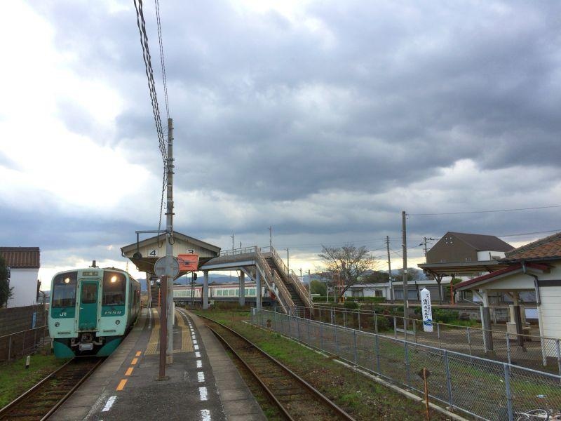
行先を 「鳴門」 に変え 乗客を待っている列車の後ろ。高徳線ホームに特急列車が入線してきました。
今から階段を駆け上がって1番線に行っても間に合いません。鳴門線ホームから眺めることにしました。
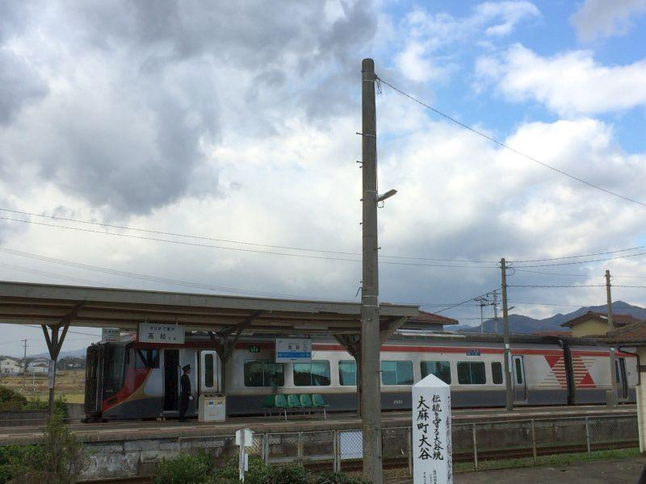
特急うずしお
新型車両であり 後にも先にも製造されないこととなった、4両二編成しか存在しない JR四国2600系気動車です。
僅かばかりの 池谷駅の乗降客と鳴門線からの乗換客を迎えたところで、すぐ発車しました。
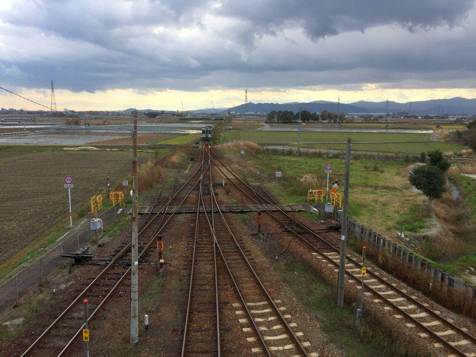
続けてやってきた 上り列車。
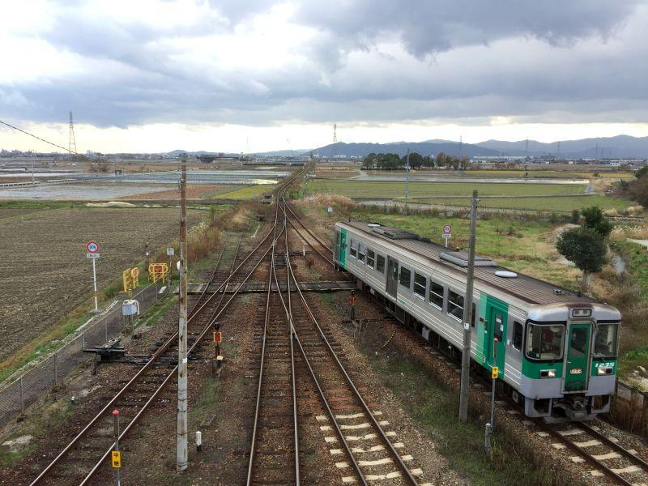
高徳線・板野駅までの近距離を走る 各駅停車でした。
奥が徳島、手前が池谷。
左二線が鳴門線、右二線が高徳線。
よく観察してみると、左から二番目(鳴門線)の線路が直進していることがわかります。
通常 一番最初に開通する路線を分岐やカーブする形で敷設することはありません。直進している左から二番目が この場所に敷かれた線路の元祖、ということになります。
池谷駅は 大正5年(1916)に、阿波電気軌道によって開業したもの。
社名からわかるように 当初は動力に電気を用いた鉄道事業を計画していたが、電力会社に供給を受けるだけの余裕がなく 自前で発電所を建設するにはお金がかかり過ぎる。ということで 止む無く蒸気機関車を走らせた。
この時 電気が用いられなかったことが、47都道府県で唯一 "電車が走ったことがない" 一因になっています。
< 参考記事 >2018,4/30 レール上を走るゴンドラ。これは電車になるのか < すろっぴー / 徳島県鳴門市 >
開業当時の路線は、
撫養(むや) － 池谷 － 古川
鳴門と徳島を結ぶ路線として建設された。
ただ、
吉野川北岸(中原、古川駅の一つ手前) と 吉野川南岸(富田橋)
の間は 資金難等から架橋することができず、吉野川を連絡船で接続した。
後に、
池谷 － 阿波大寺(後の板西、現 板野駅) －鍛冶屋原
も開業。しかしながら その工事資金のやりくり等により、阿波鉄道は資金難に陥っていた。
その後、鉄道省による 高松 － 徳島 の鉄道路線が計画された際、阿波鉄道は連絡船事業と共に買収されることに(借金がある民鉄が 国有化されることで借金を完済して 会社を解散させることはよくみられた)。
池谷駅から分岐、行き止まりであった鍛冶屋原線を 板西(現 板野)から分岐させ、高松からの路線に接続させた上で 高徳本線に改称。
当初の池谷駅は 歴史的な建設経緯から、鳴門方面から板野(高松)方面へは直通することができたが、徳島方面から来て板野(高松)方面へ向かうには、スイッチバックを行う必要があった。
そのため 徳島 － 高松 間を方向転換することなく運行できるよう、分岐駅である池谷駅の位置を 現在地に移転させた。
吉野川の鉄道連絡船は、昭和10年(1935)に高徳線・吉野川橋梁が完成したため、その役目を終えた。
当初 鳴門線・鍛冶屋原線として建設されたものの一部が、後に高徳都市間を結ぶ 高徳本線(現 高徳線)となりました。
かつては本線を名乗り、現在は新型特急が軽快に往来する幹線でありながら 高徳線の方が分岐する形となっているのは、このような経緯によるものです。
全国的に見れば、
大府駅(東海道本線 と 武豊線)
多気駅(紀勢本線 と 参宮線)
古市駅(近鉄南大阪線 と 長野線)
など
いずれも本線格は前者ですが、後者の方が先に建設されたため 本線側が分岐してカーブする形状になっている点が、池谷駅と共通しています。
駅周辺地図
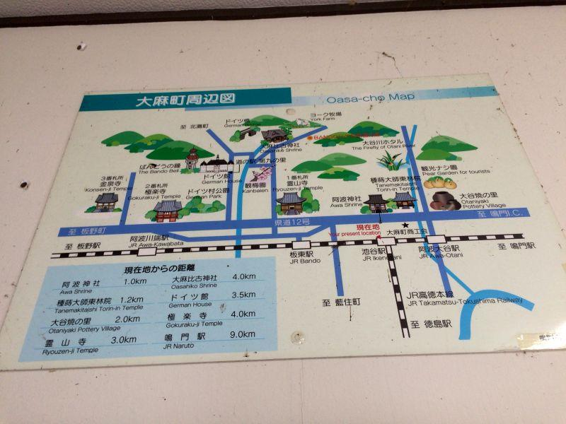
駅舎内にあった周辺地図
大谷焼の里や、四国霊場第一番札所・霊山寺(りょうぜんじ)、日本における第九初演の地・板東等が、近くです。
パッと見たところ、そんなに古い地図ではありませんが "JR高徳本線" とあります。
昭和62年(1987)4月 国鉄 → 四国旅客鉄道(JR四国)
昭和63年(1988)6月 高徳本線 → 高徳線 改称
JR高徳本線だった時期は1年2ヶ月しか無かったので これは貴重です。
ただ、平成17年(2006)に開駅した 道の駅第九の里 が表記されているので、誤植かもしれません。
池谷駅
< 自家用車 >
高松駅から 約1時間10分、60km
高知龍馬空港から 約20分、11km
< 公共交通機関 >
JR高徳線・鳴門線 池谷駅 下車
コトバスステーション鳴門 下車 ... 1.6km ... 金毘羅前駅 ～ 列車二駅 ～ 池谷駅
※ 主な地点からの最速・最短距離
関連記事
2018,2/23 空から見る徳島県 < 徳島県東部・淡路島 >
2018,4/24 四国八十八ヶ所の第一歩となるローカル駅 < 板東駅 / 徳島県鳴門市 >
2018,4/30 レール上を走るゴンドラ。これは電車になるのか < すろっぴー / 徳島県鳴門市 >